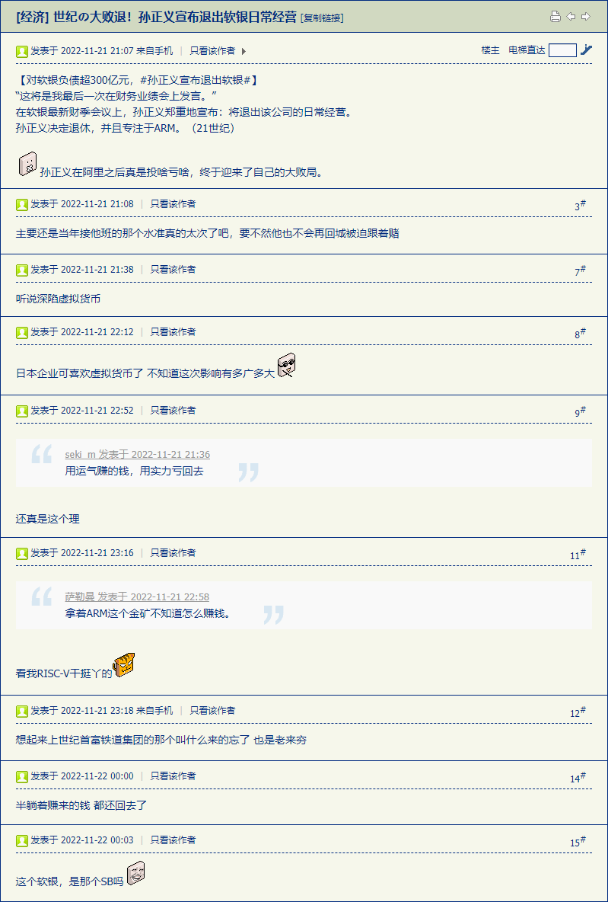
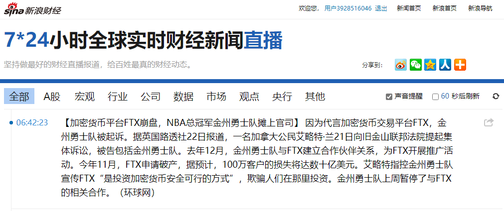
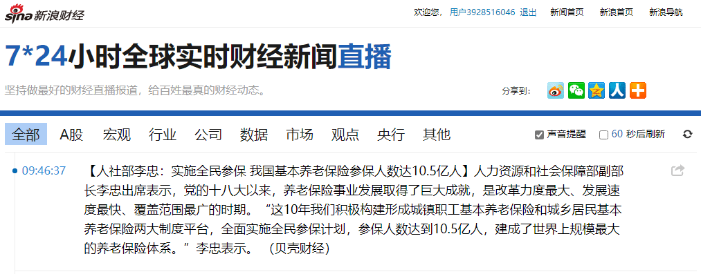
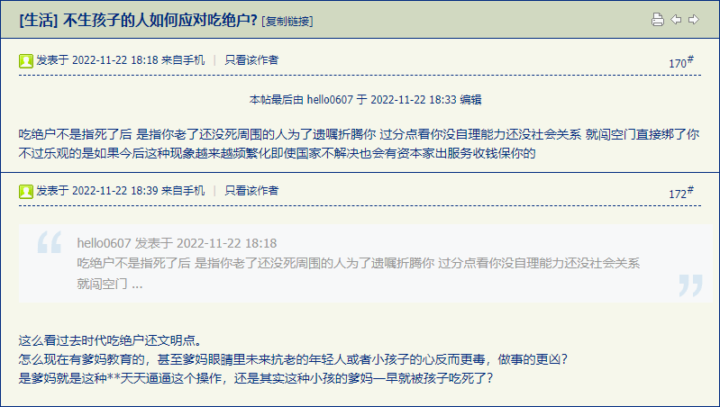
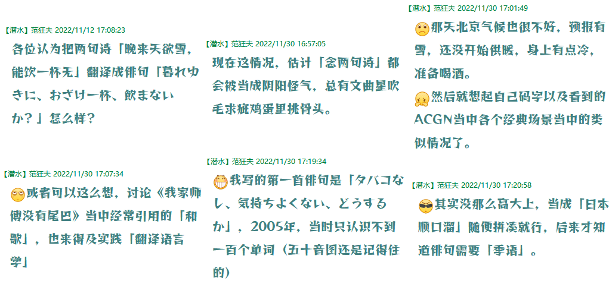

fanhan-inside
长话短说，最近相关新闻是「加密货币崩盘，FTX破产」「硅谷裁员，机器学习团队被撤」之类，于是相关线索再捋一条。
实际上在《设定集》第一辑当中已经出现两个「远古文明遗产」了，「安蒂基西拉齿轮」和「巴格达电池」，也是地摊文学当中的常客。前者设定为被圣马力诺巧取豪夺，后者则设定为被送往吕贝克。本篇先谈前者。
相关背景是本位面真实存在的「差分机」，十进制数字机械计算机，虽然巴贝奇当年只有设计草图，但是后来复古时制造过样机。
而后来的科学幻想展开当中，长得像人（字面意义上的「机器人」）唤作「萝卜（robot）」，长得不像人的自动化设备则唤作「安卓（android）」。这些字眼，也属于公共领域，如同「office」并非独占商标，不加前缀和后缀的使用当然没问题，只不过担心读者误会所以会尽量避免。
挪用到《设定集》当中，就是依托十二进制（离散）数学的三进制计算机⸺注意不要与其它背景（连续）玻尔兹曼熵的e进制「nat」信息论搞混，相关线索以后展开⸺在《恶补记》当中已经提到了「（毫无商业价值の）无用功」的理由，当然是之前多年的一贯原则：业余从事的兴趣爱好一定与工作岗位职责乃至所在单位的业务毫无关系，哪怕同属一个领域，也会选择截然不同的技术栈，说我未雨绸缪故意提前躲开可能存在的「竞业协议」也可以。
按照「任何科学技术的进步一定率先应用到军事领域」的惯例，与此相关的内容就是奇幻共识「格雷姆」或曰「魔像」，也是希伯来太君当年的民间传说。很多读者都知道「打倒魔像（golem）需要找到印迹并擦除一个字母」的已经进入公共领域的设定，架空中会结合数学和计算机常识有所扩展，这里不再重复。
而另外一个奇幻共识「石像鬼」之类非生物，在注释中也展开过了，初步决定是卡壳世界基本力之一的「活力」或曰「生命力」并没有结合正负能量的结果。相关构思还在推进当中，此处不再展开。
正文中已经提到了联省共和国的绝密「傀儡」是通过生理途径而不是物理途径传达信号的，这是「对立面」的线索，已经在第五篇〈爱与正义与红灯区〉当中通过人民群众喜闻乐见的方式展开过些许细节。与此同时使用生物加工的「亡灵生物」也是另外一个「对立面」的线索，在第六篇〈马耳他护哔骑士团〉当中也展开过「心理学界」内部纠纷⸺乍一看同一个阵营内部还有多个（依托学阀的）派阀呢⸺相信读者们都有体会，此处不再啰嗦。
先这些吧，最近这些天囧斋所在楼宇上下水道改造（还没结束），生活很不方便，并且（由于只能使用公共卫生间的缘故）白天饮水进食很少，加上身体情况还那么恶劣，所以（这十天）没怎么搜集情报素材并码字，只是脑壳里继续构思同时简单记录关键字而已。
fanhan-inside
补充情报兼素材：
范某截图备份于此

至于「软银愿景基金」亏成啥样，前一阵市面上还有大批舆论，只不过没必要备份而已。前些年孙正义说「到了2030年人工智能将如何如何」引发了大批情报工学兲才的欢呼⸺之前的谈笑风生中似乎备份过⸺直到最近「鼓吹人工智能取代人工的从业者最先被取代」之类段子所体现的人力资源部门的活动。
无论是加密货币还是人工智能，大道理最晚从2017年底开始连载《设定集・草稿长编》《恶补记》以及在知乎谈笑风生的时候就集中频繁讲过了，直接挂在标题上的篇目就不少，乃至「康托路径依赖，策梅洛天命昭昭，冯诺依曼武德充沛，豪斯多夫费拉不堪」之类应景口号，这里不再罗列也不再重复。
就提一点，整个《设定集》的意识形态背景「希帕索斯永垂不朽」以及剧情当中斗争主线「希帕索斯会vs走毕达哥拉斯路线的当权派」，都是建立在严格的数学基础之上的。比如「有限精度的有理数域当中自发涌现出智能」这种观点，都涉及到无理数的历史和现实地位，在卡壳世界早期的《实分析》结论导致了基督教「神人二性不混合不改变不分割不分离」的正统教义的确立，而在本位面也可以作为神学观点的一种阐释。
而与此对应的《复分析》结论，作为聂斯脱利派的立论基础，认为超自然存在有「虚质量」，作为「一个位格两个实体」神学观点的阐述。而进一步发展则放在琐罗亚斯德教的背景当中，正式形成「经院数学」这个领域。与此相关的，至于导致东西教会大分裂的「和子句」纠纷⸺圣灵来自哪里⸺也会有数学上的严格阐述。由于恶补计划中断，目前还没有进一步的展开。
之所以相关数学结论「挂靠」在基督教之上，一方面是本位面历史（无论是宗教史政治军事史还是学术史）演变就是如此，另一方面确实基督教经典当中有明确切入点（掰饼分鱼）直接导致巴拿赫塔斯基定理以及其所依赖的前提选择公理从而回归「拣选」字眼形成情节闭环⸺其它宗教没有这种教义突破口。
政治立场也是一开始就强调了，希帕索斯比耶少爷早了五百年，比苏格拉底还早，于是无论神棍还是哲棍都没理由胡说八道胡搅蛮缠。按照砥砺奋进十年来的惯例，红绿卫兵们通常跳将起来抡狼牙棒用「物质的力量」摧毁「基督教希帕索斯派」，不在乎老子儿子到底谁生谁的问题，毕竟「武德充沛侠义无双一力降十会咋地吧」「有核弹不用留着下崽么」是其所在组织三令五申强调的活动原则。
fanhan-inside
补充情报兼素材：
范某截图备份于此

相关线索在正文中已经铺垫过了：
卡壳世界・作文
“也就是说”，法比奥对钱敏感得很，“在迷锁范围内，不需要鉴定含金量含银量也可以交易了”。
“甚至不需要金银，只要有那么一丁点山铜就够了”，华生补充，“当然要配合利用山铜识别的技术”。
⸺《范版西幻设定集》之八〈金玉锦绣珠光宝气〉
这个架空时间点，（本位面尽量以物易物的）汉萨同盟尝试统一货币，正在「建立信用」阶段，贵金属铸币都是足金足银。注释中展开过了，「迷锁」以及自动收款机影射的是移动互联网和非接触支付，有识别山铜的高科技含量，外人不能模仿。
到这里略有金融常识的读者都能看出后续发展，毕竟架空中已经出现「赎罪券」这种信用货币了，剧中人物都知道信用一旦建立起来之后就是挥霍践踏的过程，拆东墙补西墙十口锅五个盖都是常态⸺历史证明无一例外⸺当然最后会玩脱。
这条线索对应着吕贝克衰落的过程，本位面历史中当然有很复杂的原因，挪用到架空中为了简明起见，将这些琐碎原因尽量归结为一条粗壮的主要原因：信用破产。
所谓信任，就像蜡烛，随意挥霍践踏「整蛊」好比烽火戏诸侯般吹灭了很容易，企图找补回来再次点燃⸺需要「火种」⸺就费劲了。
fanhan-inside
补充情报兼素材：
范某截图备份于此


相关线索在正文中也铺垫过了：
卡壳世界・作文
“不废话了，先说与咱们关系密切的泰勒斯，认为水是万物之源，明显表达了对海洋的热爱”，师尊开始授业，“他的名言很多，但是有一条经常被故意忽视，想必你也没听说过。当泰勒斯被问到什么是放在心上的新奇之物的时候，回答是‘一个老迈的僭主’，令人大感意外”。
“真敢说”，徒弟赞叹，“不过以他的财产和地位，对本国和外国领导人评头论足也算不了什么”。
“也许吧，但是僭主们明显不这么想”，师尊补充，“泰勒斯的死法也有很多传说，但是有可靠文献记载的，说是死于观看一场体育比赛时的酷热、口渴和年老体衰”。
“都一把年纪了为啥不知道养生呢？”徒弟奇怪，大热天出门参加室外活动，还没有携带足够的补给，事有反常必为妖。
“也许是宗教仪式，也许是政治运动”，师尊解释，“以各种伟大光荣正确的名义，僭主勒令他出席捧场，他有得选么？到了地头再给安排个晾在烈日骄阳之下的座位，还不给水喝，整不死也要往死里整”。
“高，实在是高”，徒弟竖起大拇指，“这种事都用不着领导操心，自然就有擅长揣摩上意的奴才打理得妥妥帖帖，三条腿的蛤蟆不好找，三条腿的色目混混鸡鸣狗盗之徒有得是”。
“但是在阿那克西美尼写给毕达哥拉斯的信当中则声称，泰勒斯在年老的时候没有好福气”，师尊举出旁证，“按照惯例夜间出门带着女仆‘仰望星空’的时候，一不留神走到悬崖边上摔了下去”。
“这倒也符合一贯传闻，泰勒斯仰望星空掉进阴沟里，也是流传甚广的段子。不惮以最大的恶意揣测，还有可能被女仆推了下去”，徒弟接口，并且不耻上问，“阿那克西美尼就是宣称气为万物之源的那个？与泰勒斯学术观点不一致？”
⸺《范版西幻设定集》之十六〈皇天后土纸猫刍狗〉
这个伏笔的构思就很早了，因为家贼拿着我身份证干这干那还要走我两张银行卡的时候说「给你交保险」，当时我根据周边现实情况以及公开新闻及网络信息获得的情报判断「我很可能活不到领退休金的时候了，没准还没你活得长」，后来的发展也是这样。我的情况每况愈下，家贼倒是喜笑颜开，但有个转折点，川普竞选连任失败之后，家贼明显焦躁，最终死在我前面还给我埋雷挖坑，我还不知道这些预计的风险到底是什么。
现在可以剧透⸺这也是「交待后事」的动机⸺架空中（被整死的）泰勒斯的遗言，是「把我的血归结到它们，以及它们的子孙身上」。
看着眼熟么？这是福音书记载耶少爷受刑前当地同胞的措辞，人称不一样而已。
众所周知三洲通衢神话传说以及各种宗教信仰互相借鉴，很多经典都有致敬至少是沿用的情况。于是架空中就利用这个共识，设定了古希腊典故被基督教挪用的情节。
这还没完，伏笔还有一个但没揭晓，就是希帕索斯的遗言：把我的血归结到你们，以及你们的子孙身上。
设定为这是希帕索斯在船上对毕达哥拉斯教会派来的杀手说的话，人称仍然不一样。
有这两条铺垫，基督教义当中的切入点就可以继续展开了。虽然现当代梵蒂冈观点认为「监狱前发表“保贼弃圣”宣言的一小撮不能“代表”全体犹太人」，但是按照常理揣测，以犹太社区的组织形式，能出头露面与罗马当局交涉的肯定是拉比之类德高望重的长老级别的人物，代表性肯定是有的，这是「正统」至少「主流」犹太教群体对其它「异端」的态度⸺没想到后来这「异端」发展壮大了而已。
本位面基督教的崛起肯定不是靠「神迹」「神术」，所以经典记载也算是「幸存者偏差」，翻身做主了之后追认。也已经在草稿当中出现了直截了当的叙述：
卡壳世界・草稿
“要是没想自杀只想发动恐怖袭击被警方击毙呢？”阿里提醒，“虽然不是每天都有，但每个月总有那么几次吧？”
“那就是普通的法制新闻了”，梁效回答，“这也不算什么。”
“要是后来平反了呢？”阿里提醒，没举例。
“冤假错案”，梁效回答，没补充说明。
“不”，阿里纠正，“革命烈士。”
“唔……”梁效被连串追问诱导出的答案，并不是最初所期待的方向。
“我再问你”，阿里举例，“羊街大阿訇能当巴黎市委书记么？”
“哦？”梁效忽然想通了，斟酌了一下措辞，使用政治术语形容意识形态立场，“依勒内写下划时代大作的时候，基督教还是……在野党。”
⸺《范版西幻设定集》第二辑草稿〈教宗难断家务事〉（原名〈夫王妻寇兄王弟寇〉）
这些情节是环环相扣的，而其它篇目引用本位面历史记载提到耶少爷下凡前后天狼星颜色变化，是为了卡壳世界「演变」而铺垫的伏笔。在注释中展开过了，正文中也出现过了，一个奇葩流形随着卡壳世界居民的意识而逐步演化。第二辑使用的地图草稿「天圆地方」已经准备开始展开线索，草稿当中多处明确暗示，只不过由于种种原因戛然而止。
就事论事，查询了家贼宣称的「交保险」情况，社保以「自由职业人员」类型缴纳共计「20年03个月」直到今年5月为止，而医保共计「17年10个月」到今年4月为止。往后的情况我完全不知道，家贼及时自绝于我导致几乎与我有关的所有信息我都不知道，「全员演戏」骗我一个人，还没剧透。
目前的身体情况，在下半身消肿（脚脖子脚面还有点疼）之后又回到了「外表看不出来，也不想让别人看出来，实际上很难受」的程度。其实2010年4月8日莫名其妙面瘫之前那段时间就是这样，2012年6月请假一个月在家休息的时候也是这样。
摄像头后的观众朋友和窃听器后的听众朋友看我「没事啊，挺正常的嘛」就判断为「装病」。在去年健康每况愈下而于11月4日开始「红条见底」的时候恐怕仍然判断为「装病」。到今年看见饥荒两个多月后瘦得皮包骨的情况了，又看见浮肿两个多月走不动道穿不上衣服的情况了……还觉得我在「装」是吧？
我自己的情况自己清楚，即便十月初开始手头略微宽裕（到现在又山穷水尽了）开始恶补营养，但是时刻提醒自己「（我）没有时间」所以急着体验生活确定细节整理线索「交待后事」。
fanhan-inside
备份自己昨天的发言：
范某截图备份于此

权威机构已经认证了「长者」逝世，还把病因详细列出，所以相应情报可以作为素材使用。
长话短说，本位面这位「长者」肯定不是像泰勒斯那样（疑似）被迫害致死的，但是本位面历史上本国境内有那么砥砺奋进的十年，很多「长者」乃至「中年人」都被迫害致死……繁荣的简体中文互联网上各大宣传阵地纷纷传达最高指示「这事不好说太细」。
然后就是与此相关的联想，或曰线索关联，这些被迫害致死的「中老年人」，有什么遗言？是不是类似「把我的血归结到它们/你们以及它们/你们的子孙身上」或曰两句诗「天长地久有时尽，此恨绵绵无绝期」？
这也算一种翻译与修辞相关的学术问题嘛，然后按照（「“十九年七闰”公案」以来十三年间的）惯例注定会上升到政治斗争乃至军事冲突之上。
那么又要「不忘初心」（ab initio
）从三洲通衢原文出处开始按照职业习惯严密的考虑问题了也。
当时希伯来太君已经亡国，但没有亡党，第二圣殿还在，还有祭司阶层存在，还在坚持《塔纳赫》当中看不到一丁点雌权主义痕迹的传统风俗习惯。而按照「母系」传承的新时代政治规矩和组织纪律，是在它们自己向「猴爪」许愿并应谶之后才形成的。
曰若稽古，真正的雌权主义政体，是传说中的「亚马逊」，男人只用来配种打杂，还是希腊特色档案记载，还是比耶少爷下凡早得多。对应到我中华兲嘲上国的传说就是「女儿国」，没有男人，甚至不需要「借种」，凭借「神力」就可以传宗接代，乃至维护国防治安。浪漫主义文本当中没写出来的，就是「其境内男人不算人，至少没有公民身份」或曰「阅兵式上线直播了没有？咱女儿国今非昔比啦！雄性有身份证么？」
这些内容，都在《设定集》第十九篇〈昔在上圣昭事百神〉当中作为线索出现。到了可能的「正传」展开当中，会把浪漫主义叙事转化为魔幻现实主义叙事，此处按下不表。
然后就是与此相关的浪漫主义二次元大作《想要成为影之实力者》，虽然作者及出版社按照惯例声明「与现实中人物团体事件毫无关系」，但是众所周知画鬼容易画人难，肯定借鉴了本位面历史与现实大批典故。
简单说，除了主角一个男人之外全是女人的「影庭」，到底是「唐僧留在女儿国」的形式，还是「“蛇太君”领导的色目“羊门女将”推出雄性买办代言人」？
这个问题让正在连载中的作者（及其编辑）回答去吧，此处不再揣测。
另一个「文学批评」问题就与本篇日志主题有关了：该作品设定中全体雌性的「影庭」成员由于「血脉」原因而获得「诅咒」表现出「恶魔凭依」状态于是下场「悲惨」但被主角「拯救」……参考的是什么典故呢？
我的理解很简单：
亚马逊覆灭之谜
当年有个「反派」被整死了，于是临终遗言就是「把我的血归结到那“正派”英雌，以及她的女孙身上」，后续发展参考第二圣殿被摧毁之后直到二战之前犹太人的经历理解可也，而主角就是二战后犹太人翻身做主当中的关键一环的拟人化影射。